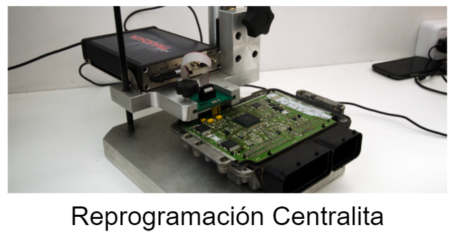

Chip de potencia
La modificación de la centralita se puede hacer gracias a un accesorio llamado chip de potencia o chip tunning que se coloca de manera sencilla en el coche y que se puede revertir en cualquier momento por parte del usuario. Las principales ventajas de este tipo de reprogramación son: Fácil colocación y extracción, sin necesidad de desmontar nada. Lo puede hacer el mismo usuario. Reutilizable en otro coche cambiando el archivo de reprogramación y si es necesario el cableado. Se puede quitar antes de llevar el vehículo a las revisiones. No deja rastro al desinstalarse. Algunas versiones se pueden controlar gracias a una aplicación en el teléfono móvil.